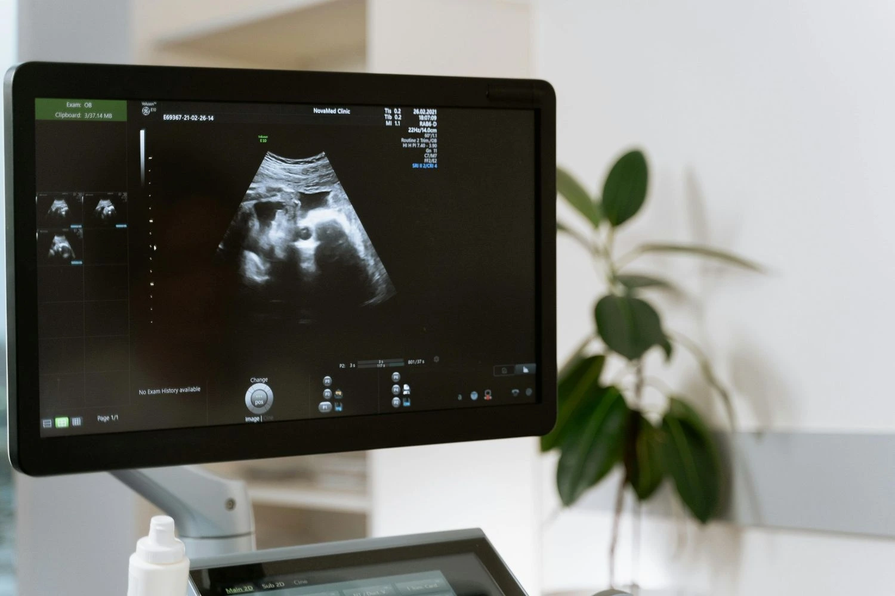

The first weeks of pregnancy are a time of extraordinary excitement — and entirely understandable anxiety. A positive home pregnancy test confirms that conception has occurred, but it cannot tell you where the pregnancy has implanted, whether the embryo is developing normally, or when your baby is due. The 6–9 week viability scan heartbeat assessment answers all of these questions in a single appointment, giving you the clinical confirmation that your pregnancy is progressing as it should. This guide explains everything you need to know about the first trimester dating scan, the role of the TVS scan for early pregnancy, how the pregnancy scan to confirm due date works, what detecting twins in 8 week ultrasound involves, and how to compare early pregnancy scan cost in Madurai across providers. As the best early pregnancy scan centre near me in Madurai, Meera 4D Scans provides complete first trimester scanning with same-day results and experienced specialist reporting. Contact us today for the current early pregnancy scan cost in Madurai and appointment availability.
What is an Early Pregnancy Scan and Why Does It Matter?
An early pregnancy scan — also called a viability scan, dating scan, or booking scan — is an ultrasound examination performed between 6 and 10 weeks of gestation. It is the first direct visual confirmation of your pregnancy and provides clinical information that no blood test or home pregnancy test can supply. The scan confirms that the pregnancy is developing inside the uterus (ruling out ectopic pregnancy), that the embryo is present and growing, that the heartbeat is detectable, and — crucially — the precise gestational age from which your estimated due date is calculated.
At Meera 4D Scans — the best early pregnancy scan centre near me in Madurai — every early pregnancy examination is performed by experienced sonographers with same-day reporting by specialist obstetricians. The early pregnancy scan cost in Madurai at our centre is all-inclusive with no hidden charges. Contact our team to confirm current pricing and to book your appointment.
What an Early Pregnancy Scan Confirms
- Intrauterine pregnancy confirms the gestational sac is located inside the uterine cavity, ruling out ectopic (fallopian tube) implantation — a potentially life-threatening condition that requires immediate clinical management and cannot be excluded by any test other than ultrasound
- Embryo presence and viability confirms an embryo is visible within the gestational sac with a detectable fetal heartbeat, establishing clinical viability at the 6–9 week viability scan heartbeat stage
- Gestational age and due date the crown-rump length (CRL) measurement provides the most accurate gestational age calculation available — the foundation of the pregnancy scan to confirm due date and all subsequent antenatal scheduling
- Number of embryos singleton, twin, or higher-order multiple pregnancy is confirmed at the first trimester scan. Detecting twins in 8 week ultrasound also allows chorionicity determination — essential for risk-stratified multiple pregnancy management
- Uterine and ovarian anatomy the scan assesses the uterus for fibroids or structural anomalies and the ovaries for corpus luteum cysts and other adnexal pathology that may be relevant to pregnancy management
- Gestational sac and yolk sac assessment the size and regularity of the gestational sac and the presence and appearance of the yolk sac provide important prognostic information in early pregnancy, particularly in cases of threatened miscarriage or vaginal bleeding
Week-by-Week: What the Early Pregnancy Scan Shows at 6, 7, 8, and 9 Weeks
The embryo develops rapidly in the first trimester. What the 6–9 week viability scan heartbeat assessment can show differs significantly across this four-week window. Understanding what is expected at each gestational age helps expectant mothers interpret their scan findings accurately and avoids unnecessary anxiety when early scans show findings that are normal for that specific week.
Early Pregnancy Scan Findings by Gestational Week
| Gestational Age | Expected Scan Findings | TVS vs Transabdominal |
|---|---|---|
| 5 weeks + 0–6 days | Gestational sac visible in uterus; yolk sac may be present; embryo not yet reliably visible; heartbeat not yet detectable | TVS scan for early pregnancy required for reliable visualisation at this gestation |
| 6 weeks + 0–6 days | Embryo (fetal pole) visible; fetal heartbeat detectable from approximately 6 weeks 2–3 days via TVS; CRL 2–5 mm; yolk sac clearly visible | TVS scan for early pregnancy strongly preferred; transabdominal may miss heartbeat at this gestation |
| 7 weeks + 0–6 days | Embryo clearly defined; fetal heartbeat consistently detectable; CRL 7–14 mm; early limb buds forming; first trimester dating scan CRL highly accurate at this stage | TVS or transabdominal both adequate; TVS still preferred for optimal CRL measurement precision |
| 8 weeks + 0–6 days | Embryo clearly humanoid; CRL 14–22 mm; heart rate measurable; detecting twins in 8 week ultrasound is reliable with individual heartbeats and chorionicity assessment possible | Both TVS and transabdominal adequate; most complete assessment for twin detection and chorionicity |
| 9 weeks + 0–6 days | CRL 22–30 mm; head, body, and limb structures visible; placenta beginning to differentiate; pregnancy scan to confirm due date accuracy ±5 days at this gestation | Transabdominal usually adequate by 9 weeks; TVS optional |
The best early pregnancy scan centre near me should be equipped to perform both TVS scan for early pregnancy and transabdominal early pregnancy scanning, adapting the technique to gestational age and clinical indication. Meera 4D Scans offers both modalities with same-day results and transparent early pregnancy scan cost in Madurai.

TVS Scan for Early Pregnancy Why Transvaginal Scanning Is the Gold Standard
The TVS scan for early pregnancy (Transvaginal Scan) is the clinical gold standard for first trimester embryo assessment between 5 and 8 weeks. The transvaginal approach places the ultrasound probe within the vaginal canal — much closer to the uterus than a transabdominal scan through the abdominal wall — producing images of significantly higher resolution and diagnostic quality for early pregnancy structures that are otherwise very small.
Clinical Advantages of TVS Scan for Early Pregnancy
- Earlier heartbeat detection a fetal heartbeat is detectable via TVS scan for early pregnancy from approximately 6 weeks 2–3 days gestation, up to 1–2 weeks earlier than transabdominal scanning can reliably achieve. This is critical for the 6–9 week viability scan heartbeat assessment
- More accurate CRL measurement the crown-rump length measurement used for the first trimester dating scan is more precise via TVS scan for early pregnancy because image resolution is higher and the embryo can be more clearly delineated from surrounding structures
- Better ectopic exclusion the fallopian tubes and adnexal structures are visualised with much greater detail via TVS, making it the most sensitive tool for ruling out ectopic pregnancy at 6–7 weeks when the ectopic sac may be too small to see transabdominally
- No full bladder required the TVS scan for early pregnancy is performed with an empty bladder, making it more comfortable and convenient than transabdominal scanning which requires bladder filling
- Clearer in higher BMI patients in patients with a higher body mass index, the abdominal wall creates significant acoustic attenuation that reduces transabdominal image quality. TVS bypasses this entirely, producing diagnostically equivalent results regardless of BMI
- Safe and well tolerated the TVS scan for early pregnancy uses a smooth, slender probe with no radiation and is safe throughout the first trimester. It is performed with the patient's full informed consent and is not associated with any risk of miscarriage
First Trimester Dating Scan Confirming Your Due Date with Precision
The first trimester dating scan — also called the pregnancy scan to confirm due date — is the most accurate method available for establishing gestational age. The estimated due date (EDD) calculated by the first trimester dating scan is more reliable than calculation from the last menstrual period (LMP) alone, particularly for women with irregular cycles, recent use of oral contraceptives, or uncertainty about their LMP date.
How Crown-Rump Length Determines Your Due Date
Crown-rump length (CRL) is the measurement from the top of the embryo's head (crown) to its base (rump), taken in the neutral position on ultrasound. This single measurement correlates with gestational age with remarkable accuracy in the first trimester, as embryonic growth is highly consistent across all pregnancies between 6 and 13 weeks regardless of genetic or ethnic background. The CRL measurement from the first trimester dating scan determines:
| CRL Range | Approximate Gestational Age | Dating Accuracy |
|---|---|---|
| 2 – 5 mm | 5 weeks 5 days – 6 weeks 2 days | ±7 days at this early stage |
| 7 – 14 mm | 7 weeks 0 days – 7 weeks 6 days | ±5 days — optimal dating window |
| 14 – 22 mm | 8 weeks 0 days – 8 weeks 6 days | ±5 days — accurate first trimester dating scan |
| 22 – 30 mm | 9 weeks 0 days – 9 weeks 6 days | ±5 days — still reliable for pregnancy scan to confirm due date |
| 45 – 84 mm | 11 weeks – 13 weeks 6 days | ±5–7 days; NT measurement added at this stage |
Once the first trimester dating scan establishes the gestational age and EDD, this date is used as the reference point for all subsequent antenatal appointments, anomaly scan scheduling, fetal growth assessment, and delivery planning. An accurate pregnancy scan to confirm due date early in pregnancy prevents avoidable induction for apparent post-dates pregnancy and ensures growth measurements at later scans are interpreted against the correct gestational age standard.

Detecting Twins in 8 Week Ultrasound Chorionicity and What It Means
One of the most important discoveries an early pregnancy scan can make is a multiple pregnancy. Detecting twins in 8 week ultrasound is reliable, accurate, and clinically essential — not just for confirming the number of babies, but for determining chorionicity, the most significant prognostic factor in twin pregnancy management.
What Chorionicity Means and Why It Matters
Chorionicity refers to whether twins share a placenta (monochorionic) or have separate placentas (dichorionic). This is determined by the type of twinning that occurred. Identical twins (monozygotic) may be monochorionic or dichorionic depending on when the embryo split; non-identical twins (dizygotic) are always dichorionic. The clinical significance of chorionicity is profound:
| Twin Type | Chorionicity | Clinical Significance | Surveillance Required |
|---|---|---|---|
| Non-identical (Dizygotic) | Dichorionic diamniotic (DCDA) | Each twin has its own placenta and amniotic sac; lowest-risk twin type | Growth scans every 4 weeks from 20 weeks |
| Identical — split before day 3 | Dichorionic diamniotic (DCDA) | Separate placentas despite being identical; managed as DCDA | Growth scans every 4 weeks from 20 weeks |
| Identical — split day 3–8 | Monochorionic diamniotic (MCDA) | Shared placenta; risk of twin-to-twin transfusion syndrome (TTTS) requiring intensive surveillance | Doppler scan every 2 weeks from 16 weeks; specialist fetal medicine input |
| Identical — split day 8–13 | Monochorionic monoamniotic (MCMA) | Shared placenta and amniotic sac; highest-risk twin type; risk of cord entanglement | Intensive surveillance; often planned hospital admission from 28 weeks |
Chorionicity is most accurately determined between 7 and 10 weeks by identifying the number of gestational sacs, the membrane thickness between twins, and the lambda (dichorionic) or T-sign (monochorionic) at the placental insertion of the inter-twin membrane. After 14 weeks, chorionicity determination becomes significantly less reliable. This is why detecting twins in 8 week ultrasound at the best early pregnancy scan centre near me — rather than waiting until the 12-week NT scan — is so clinically important for appropriate twin pregnancy management.
6–9 Week Viability Scan Heartbeat What Normal Findings Look Like
For most expectant mothers, the moment the sonographer points to the flickering heartbeat on the screen is one of the most reassuring experiences of early pregnancy. The 6–9 week viability scan heartbeat is not just an emotional milestone — it is a clinical event with specific normal parameters that the specialist assesses.
Normal Fetal Heart Rate by Gestational Week
| Gestational Week | Normal Fetal Heart Rate (bpm) | Clinical Note |
|---|---|---|
| 6 weeks | 90 – 110 bpm | Rate increases rapidly over the next 2–3 weeks; a rate below 80 bpm at 6–7 weeks warrants close follow-up |
| 7 weeks | 120 – 150 bpm | Rapid rise toward peak rate; well within normal range at this gestation |
| 8 weeks | 150 – 175 bpm | Peak fetal heart rate period; rates above 180 bpm at this stage are uncommon and warrant review |
| 9 weeks | 155 – 175 bpm | Beginning to stabilise toward the normal second and third trimester range of 120–160 bpm |
The 6–9 week viability scan heartbeat report at Meera 4D Scans records the fetal heart rate, confirms regularity of the heartbeat, and documents the finding alongside gestational sac measurements, CRL, and yolk sac appearance — providing a complete clinical picture for your obstetrician rather than a simple yes/no confirmation of cardiac activity.
Early Pregnancy Scan Cost in Madurai What Is Included at Meera 4D Scans
The early pregnancy scan cost in Madurai at Meera 4D Scans is transparently structured. The quoted price covers all of the following with no additional charges:
Early Pregnancy Scan Cost All-Inclusive at Meera 4D Scans
- Complete early pregnancy examination TVS scan for early pregnancy and/or transabdominal scanning as clinically indicated for gestational age, with gestational sac measurement, yolk sac assessment, embryo visualisation, and heartbeat confirmation
- Crown-rump length (CRL) measurement precise CRL measurement for the first trimester dating scan and pregnancy scan to confirm due date with gestational age calculation and estimated due date included
- Fetal heartbeat documentation heart rate measurement and confirmation included in the 6–9 week viability scan heartbeat report
- Twin assessment if applicable detecting twins in 8 week ultrasound with chorionicity determination included within the standard early pregnancy scan cost in Madurai
- Uterine and ovarian assessment evaluation of the uterus, cervix, and ovaries for fibroids, adnexal cysts, and structural pathology
- Detailed specialist report same-day written report documenting all findings with clinical impression, gestational age, EDD, and recommendations for obstetric follow-up
- Digital scan images provided alongside the written report for your obstetrician and for your personal records
- No hidden charges the early pregnancy scan cost in Madurai quoted at booking is the total payable with no separate report fee, image charge, or registration surcharge
Early Pregnancy Scan Cost in Madurai What Drives Price Variation
| Cost Factor | Impact on Early Pregnancy Scan Cost in Madurai |
|---|---|
| TVS vs transabdominal only | Centres that offer only transabdominal scanning may quote a lower early pregnancy scan cost in Madurai but cannot provide a diagnostically complete 6–9 week viability scan heartbeat assessment at earlier gestations where TVS is essential |
| Equipment quality | High-resolution obstetric ultrasound systems with dedicated transvaginal probes deliver significantly better image quality for early embryo assessment than entry-level systems — reflected in a slightly higher but more clinically reliable early pregnancy scan cost in Madurai |
| In-house vs outsourced reporting | In-house specialist reporting at the best early pregnancy scan centre near me provides same-day results with clinical context; outsourced reporting delays turnaround and reduces clinical relevance |
| All-inclusive vs headline pricing | Confirm whether the quoted early pregnancy scan cost in Madurai includes the specialist report, digital images, and TVS scan in addition to the transabdominal examination. Only all-inclusive figures are accurately comparable |
| Hospital vs standalone centre | Hospital early pregnancy scan cost includes facility overhead. Standalone diagnostic centres like Meera 4D Scans offer equivalent clinical quality at a more competitive early pregnancy scan cost in Madurai |
To confirm the current all-inclusive early pregnancy scan cost in Madurai at Meera 4D Scans, contact our team directly. We will confirm exactly what is included, the type of scan performed, same-day reporting arrangements, and the total early pregnancy scan cost in Madurai with no hidden additions.
Choosing the Best Early Pregnancy Scan Centre Near Me in Madurai
When selecting the best early pregnancy scan centre near me for your 6–9 week viability scan heartbeat assessment or first trimester dating scan, the following criteria determine the clinical reliability of the result you receive:
How to Evaluate an Early Pregnancy Scan Centre
Confirm TVS Scan Availability
At 6–7 weeks, a TVS scan for early pregnancy is clinically essential for reliable heartbeat detection and accurate CRL measurement. Confirm before booking whether the centre offers TVS in addition to transabdominal scanning — a centre that offers only transabdominal scanning cannot provide a complete 6–9 week viability scan heartbeat assessment at the earliest gestations.
Confirm Same-Day Specialist Reporting
The clinical value of an early pregnancy scan depends on the quality of the written report. Confirm that the best early pregnancy scan centre near me produces a detailed same-day specialist report documenting gestational sac measurements, CRL, heart rate, and clinical impression — not just a scan image without interpretation.
Confirm Chorionicity Assessment for Twin Pregnancies
If you are at risk of or suspected to have a multiple pregnancy, confirm that the centre is experienced in detecting twins in 8 week ultrasound and in chorionicity determination. This assessment requires specific technical expertise and is most reliably performed between 7 and 10 weeks.
Verify Equipment Quality
For the first trimester dating scan CRL measurement to achieve the ±5-day accuracy standard, the ultrasound system must have high spatial resolution and a dedicated transvaginal probe. Ask whether the centre uses dedicated obstetric ultrasound equipment or general-purpose machines not optimised for early embryo imaging.
Confirm All-Inclusive Early Pregnancy Scan Cost
The early pregnancy scan cost in Madurai should cover the examination, TVS where applicable, specialist report, and digital images — with no separate charges. Always compare all-inclusive early pregnancy scan cost in Madurai figures, not headline prices that exclude the report or TVS component.
Preparation for Your Early Pregnancy Scan at Meera 4D Scans
Once you book your early pregnancy scan at Meera 4D Scans, the following preparation ensures the best possible scan conditions:
- TVS scan — empty bladder if your appointment includes a TVS scan for early pregnancy, come with an empty bladder. The transvaginal probe images best when the bladder is not distended. You will be asked to empty your bladder immediately before the TVS component begins
- Transabdominal scan — moderately full bladder if a transabdominal scan is also planned (before 7 weeks or as part of a combined examination), drink 500–700 ml of water approximately 45 minutes before your appointment and do not urinate
- No fasting required eat and drink normally before your early pregnancy scan. There are no dietary restrictions for any first trimester ultrasound examination
- Bring your referral and LMP date your obstetrician's or GP's referral letter and the date of your last menstrual period (LMP) help our specialist provide a contextually accurate pregnancy scan to confirm due date and gestational age calculation
- Wear comfortable two-piece clothing for the TVS scan for early pregnancy, you will need to undress from the waist down. A two-piece outfit makes this straightforward. You will be provided with a sheet for comfort and privacy throughout the examination
- Duration an early pregnancy scan combining TVS and transabdominal components takes approximately 20–30 minutes. The written specialist report is prepared and delivered the same day
Why Meera 4D Scans is the Best Early Pregnancy Scan Centre Near Me in Madurai
Meera 4D Scans is established as the best early pregnancy scan centre near me in Madurai for first trimester scanning, viability assessment, and dating. Key differentiators include:
- TVS scan for early pregnancy available alongside transabdominal scanning for complete, accurate early embryo assessment from 5 weeks gestation onwards
- Precise first trimester dating scan with CRL measurement to ±5-day accuracy for the most reliable pregnancy scan to confirm due date in Madurai
- Complete 6–9 week viability scan heartbeat assessment with heart rate measurement, gestational sac evaluation, and yolk sac assessment documented in a detailed same-day specialist report
- Detecting twins in 8 week ultrasound with expert chorionicity determination — the most important prognostic assessment in multiple pregnancy, performed within the standard early pregnancy scan cost in Madurai
- Transparent early pregnancy scan cost in Madurai — all-inclusive pricing with no hidden charges covering the TVS scan, transabdominal scan, specialist report, and digital images
- Same-day detailed specialist reports for every early pregnancy examination, ready for your obstetrician or GP at your next appointment
- Trusted by 10,000+ patients in Madurai for pregnancy scans, neurology, cardiology, and women's health diagnostics across all stages of life
For the current early pregnancy scan cost in Madurai, to confirm availability of TVS scan for early pregnancy or first trimester dating scan, or to book your appointment, contact Meera 4D Scans today or call +91-9042883031. Same-day appointments are available subject to schedule.
Useful Resources
Clinical and patient-facing references for early pregnancy scanning, viability assessment, first trimester dating, and twin pregnancy management.
-
ISUOG Practice Guidelines: First Trimester Fetal UltrasoundInternational Society of Ultrasound in Obstetrics and Gynaecology clinical guidelines on first trimester scanning, viability assessment, and dating scan protocols.
-
RCOG Green-Top Guideline: Management of Twin PregnanciesRoyal College of Obstetricians and Gynaecologists guidance on twin pregnancy management including chorionicity determination in early pregnancy ultrasound.
-
WHO Maternal Health and Antenatal CareWorld Health Organization guidelines on antenatal care and the role of early pregnancy ultrasound in confirming viability and gestational age.
-
Practo Pregnancy Scan Centres in MaduraiCompare early pregnancy scan centres and early pregnancy scan cost in Madurai with patient reviews and online appointment booking.
-
National Health Portal India Diagnostic ImagingOfficial Indian government patient guidance on antenatal ultrasound scanning, first trimester assessment, and pregnancy monitoring standards.